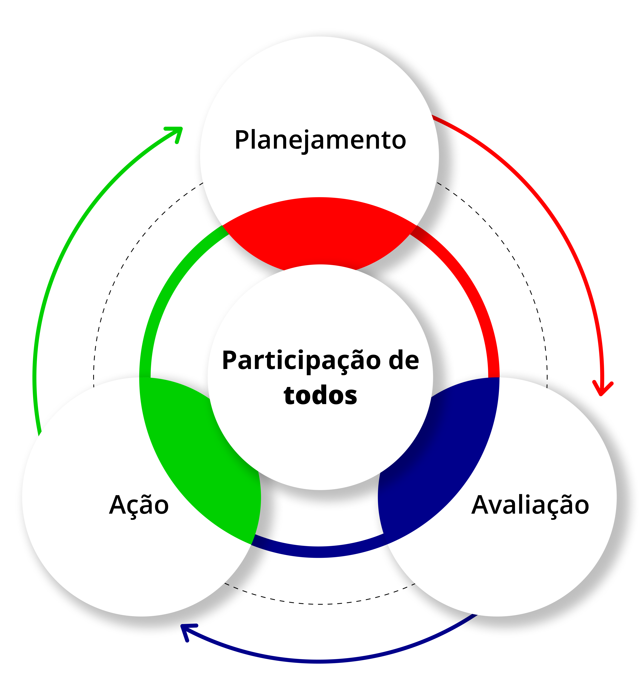

Gestão, autogestão e transformação na EPT
Acácia Kuenzer (2004) afirma que é a posse do conhecimento que promoverá a passagem da aceitação da autoridade para a autonomia, na perspectiva da autonomia intelectual e ética, permitindo que o trabalhador participe, por sua atividade, da criação de novas possibilidades de trabalho, no que diz respeito aos processos tecnológicos e às formas de organização. Ao viver isto em sua formação profissional, ele poderá levar estas experiências e vivências para o mundo do trabalho.
Nesse contexto, a qualidade do ensino na EPT supõe, então, a busca pelo melhor, por um padrão científico e fundamentado dos conteúdos acumulados e transmitidos. Mas ela é também uma forma de responsividade face aos desafios da sociedade contemporânea, que exigem um conjunto de conhecimentos e habilidades capazes de possibilitar a todos o acesso a formas de ser e de se comunicar como um participante do mundo (Cury, 2007) e em especial do mundo do trabalho. E a legislação garante este processo, por isso devemos cumpri-lo e fazer um esforço para que sejam efetivamente vividos e fortalecidos.
O artigo 12 da Lei de Diretrizes e Bases da Educação (LDB) se refere aos estabelecimentos de ensino dos sistemas. É lá que os docentes e outros agentes pedagógicos têm sua lotação administrativa e/ou seu contrato de trabalho. Se a finalidade do processo de ensino é o aprendizado do estudante, garantido por um padrão de qualidade, o núcleo básico do processo é o Projeto Pedagógico (inciso I) do estabelecimento e deve ser objeto de um planejamento, obrigatoriamente (Cury, 2007).
Portanto, o PPP não pode ser cópia de um estabelecimento que, eventualmente, teria feito uma matriz. O projeto pedagógico é a marca registrada de uma escola. Ele é a sua carteira de identidade. Daí porque, guardadas as orientações legais, os critérios e as diretrizes dos órgãos normativos, cabe ao gestor liderar propostas que devem ser retrabalhadas pelos estabelecimentos escolares de modo a deixar claro as suas especificidades, os seus tempos, a organização pedagógica, os conteúdos curriculares, as formas de aproveitamento de estudos, os processos avaliativos e as formas de recuperação e inclusão (Cury, 2007).
A partir desses entendimentos, é possível concluir que as escolas são instituições pedagógicas e as escolas profissionais, por relacionarem educação e trabalho, são fundamentalmente pedagógicas (Maraschin, 2020). E por esta razão devem ser os espaços por excelência de construção e vivência da democracia.
Sendo assim, os gestores precisam liderar e promover o ciclo da gestão que envolve o planejamento, a ação, a avaliação e o replanejamento, devendo este ser uma vivência defendida e vivida por todos.

Título: Ciclo da gestão para vivência da democracia na escola
Fonte: Prosa (2025d).
A partir dos pressupostos já mencionados e buscando sempre por experiências inspiradoras, construir a gestão educacional na EPT é mais que um desafio, é engajamento e desejo de todos – missão difícil, mas não impossível. Isto porque caminhar na direção da democracia na escola e da construção de sua pertença como espaço-tempo pedagógico com organização e projeto político próprio, com base nos fundamentos que envolvem o processo como construção coletiva, supõe e exige algumas convicções para a gestão, que são descritas a partir de Bussmann (1995):
.png)
.png)
.png)
.png)
.png)
.png)
.png)
.png)
Título: Convicções para/na gestão da EPT
Fonte: Bussmann (1995).
Elaboração: Prosa (2025e).
Sabemos que não existe um único caminho para a construção da gestão educacional da EPT, mas as convicções acima promovem etapas essenciais para coordenar e promover uma gestão que envolva a todos. Essa gestão deve se distanciar do modelo empresarial, proveniente da Administração Científica, que reduz tudo a planilhas, dados, provisões, eficiência e redução de custos. A gestão educacional, por sua natureza, é feita por pessoas e para pessoas, enquanto processos produtivos e fabris são experiências de outra ordem, frequentemente guiadas por gerencialismos em vez de uma verdadeira gestão.
Nesse contexto, uma gestão educacional verdadeiramente transformadora é aquela que vai além dos aspectos técnicos, focalizando o desenvolvimento crítico e criativo dos envolvidos e a autonomia das instituições. Para que isso aconteça, é preciso que a gestão desafie, instigue e estimule os sujeitos a prosseguirem (Bussmann, 1995). Tudo isso, ancorado em processos de formação continuada dos trabalhadores em educação, reverberará em movimentos constantes de gestão, autogestão e transformação da educação como um todo e da EPT em particular.
- O texto “Gestão democrática e a Educação Profissional e Tecnológica a partir dos pressupostos freireanos”, publicado pela Revista Brasileira de Política e Administração da Educação, destaca a gestão democrática como premissa para a realização de uma educação mais igualitária nos âmbitos da educação nacional, principalmente, na ambiência da Educação Profissional e Tecnológica. O texto é um ótimo material de estudo que aborda questões relacionadas à experiência em EPT.
- Além desta sugestão de leitura, recomendamos que você realize pesquisas em instituições de EPT que vivenciam práticas inspiradoras de gestão: sejam elas espaços participativos de construção de PDIs, de PPPs, de cursos, de normativas de convivência, de experiências de projetos de integração, de projetos de ensino, pesquisa e extensão. Também sugerimos que você mapeie estudos realizados com diferentes experiências em EPT.
Depois de ter estudado e refletido sobre a construção de uma gestão educacional em EPT, pense sobre as possibilidades de uma gestão democrática nesse campo. Olhe para si enquanto gestor ou servidor, bem como para sua instituição e para outras que conheça.
Sugerimos que você elabore um pequeno texto e registre no seu Memorial e/ou siga as orientações do seu tutor.